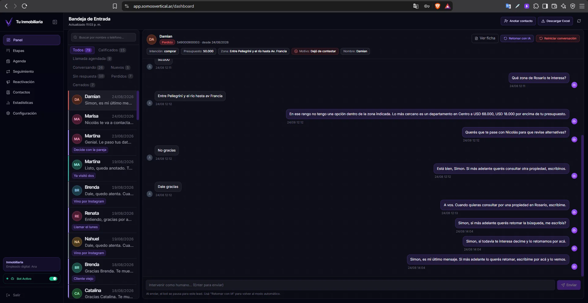
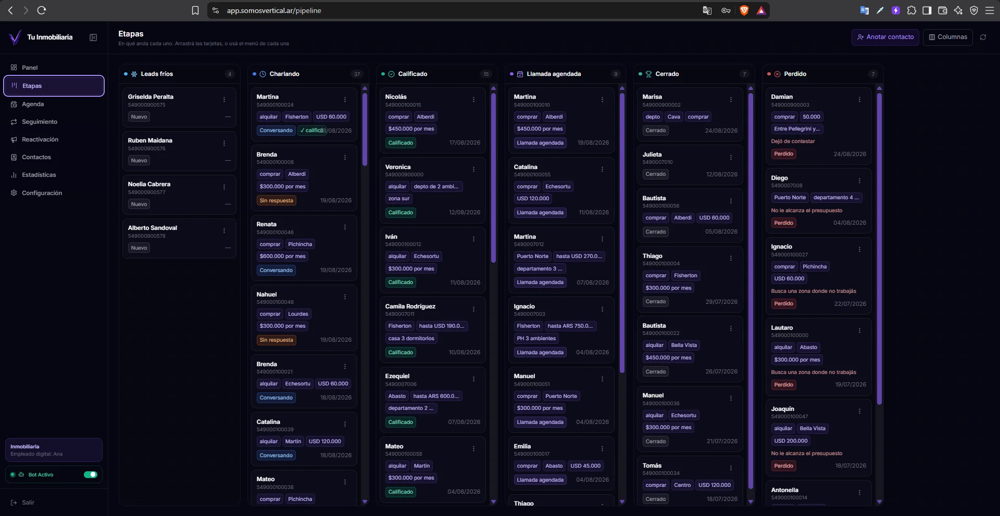
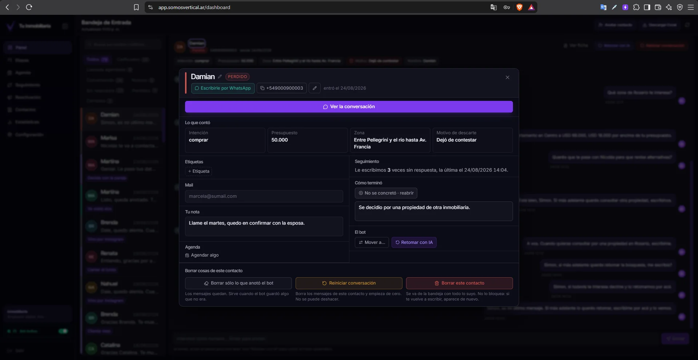
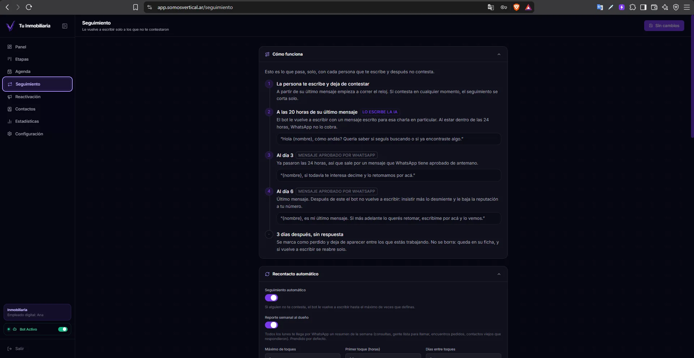
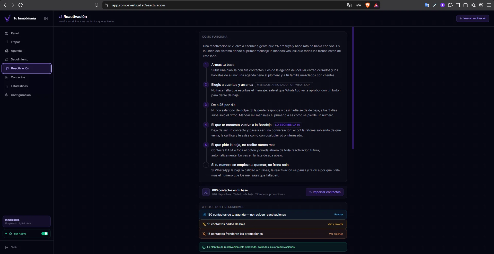
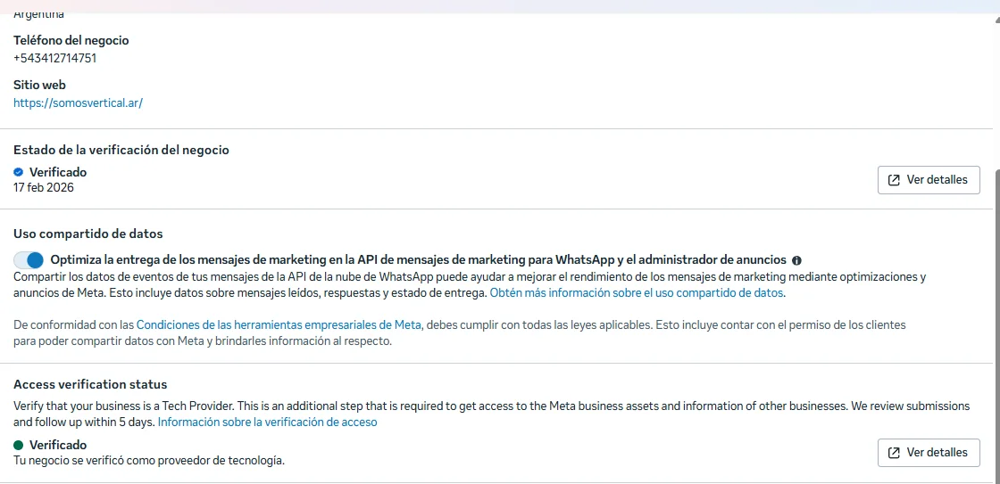
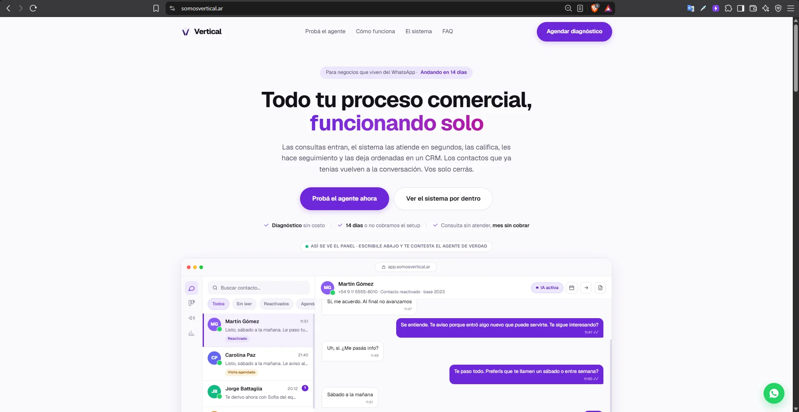

Mi propia plataforma: agentes conversacionales con IA y CRM para inmobiliarias, sobre la API oficial de WhatsApp. Califica leads, hace seguimiento y reactiva contactos las 24 horas. Proveedor de tecnología verificado por Meta.







La bandeja: el agente conversa por WhatsApp y va dejando arriba lo que averiguó — intención, presupuesto, zona y, si se cae, el motivo.
El CRM por etapas, de lead frío a cerrado. Cada contacto se mueve solo según cómo va la conversación.
La ficha del contacto: lo que contó, cuántas veces se lo siguió, cómo terminó y la nota del vendedor.
El seguimiento automático: a las 20 horas, al día 3 y al día 6, con plantillas aprobadas por WhatsApp. Si contesta, se corta solo.
La reactivación de contactos viejos, con tope diario y baja automática. Si WhatsApp baja la calidad del número, se frena sola.
El estado en Meta: negocio verificado y verificación de acceso como proveedor de tecnología (Tech Provider), que es lo que habilita a operar sobre las cuentas de WhatsApp de otras empresas.
El sitio de Vertical.
Tocá una captura para verla grande
Una inmobiliaria recibe consultas a toda hora y responde cuando puede. El contacto que no recibe respuesta en minutos se enfría, y después nadie tiene tiempo de reactivarlo.
Los links apuntan al sistema real. Si alguno dejó de existir, las capturas de arriba quedan como registro.